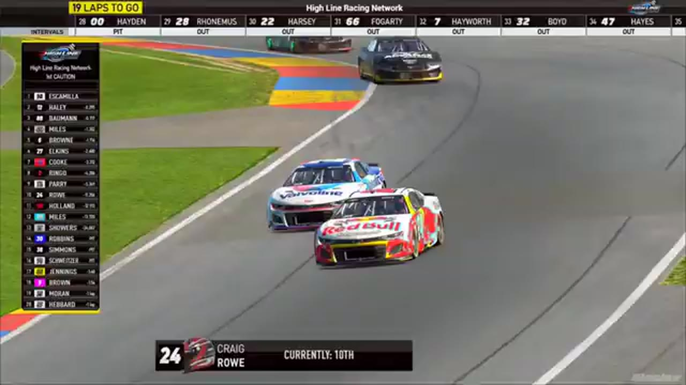

Jerry Fassett
Team assignment not stated in the structured owner record.
A REVIEWED STORY FILE
- Official files
- 19
- Central editions
- 1
- Exact tape cues
- 20
- Accepted podiums
- 0
Jerry Fassett appears in 19 official HLRN broadcast files across Seasons 1, 2. The current result ledger does not assign this driver a supported top-three finish. A consistently stated team affiliation remains open for owner review. The currently indexed source window runs from November 17, 2025 through July 20, 2026.
Highline Central supplies 1 bounded race edition, while the primary chapter index supplies 20 direct jump points. Talladega is the most frequent named track in the current appearance ledger. The densest direct-tape categories are incident (9 cues) and strategy (5 cues). Those counts describe where the name is easiest to find; they are not fault, pace, or performance grades. A source-attributed car frame is published with its original video and timestamp. That is the current discovery map for Jerry Fassett.
Official name signals are used for discovery only. They do not become starts, points, incident counts, or an ability grade. This page is deliberately detailed about the tape and restrained about the unavailable competition record. Separately, 15 Highline Live files sit on the bonus shelf and never enter the official season ledger. The displayed name is labeled transcript normalized; that status remains visible so an owner roster can strengthen or correct the identity without rewriting the evidence trail. Those boundaries define Jerry Fassett's public HLRN file.
10 featured race-tape cues
These are discovery routes into complete HLRN broadcasts, not performance grades or inferred results.
- S1 / R12 · STAGE
Jerry Fassett and Jamie Shaw enter Daytona's Stage 1 scoring call
S1 / R12 at 52:31: The broadcast enters a stage-scoring discussion at Daytona with Jerry Fassett, Jamie Shaw, and John Miles in the scoring call. The clip preserves the on-air timing or points call without promoting it into a complete stage result; the accepted feature result ledger remains separate.
Daytona - S1 / R11 · BATTLE
Nick Bowman becomes the Roval's late-race benchmark
After closing the Jerry Fassett and Dave Schutt replay, HLRN returns live and frames Nick Bowman as the driver Brandon Showers, Trevor Haley, and Joe Quan must beat. This is a late-race form check, not an incident involving the leaders.
Charlotte Roval - S2 / R4 · INTERVIEW
Juan Escamilla and Jerry Fassett give EchoPark a booth account
S2 / R4 at 2:59:01: Juan Escamilla and Jerry Fassett join the HLRN booth for a first-person race account. The interview is preserved as context and does not create a placement claim outside the accepted result ledger.
EchoPark Speedway - S1 / R16 · RESTART
Kyle Cameron and Ryan Wilson bring Talladega back to green
S1 / R16 at 2:27:43: Kyle Cameron, Ryan Wilson, Jerry Fassett, and Bryce Hinton are in the booth's front-pack call as Talladega returns to green. The cut keeps the restart launch and the first lap of lane development together.
Talladega - S1 / R4 · RESTART
Trevor Haley leads the green-white-checkered formation
The booth resets the late running order behind Trevor Haley and Juan Escamilla while the pace car remains out. A Jerry Fassett connection signal interrupts the setup before the field reaches the restart.
iRacing Superspeedway - S1 / R16 · STRATEGY
A late fuel-only cycle reshuffles Talladega
Nick Bowman and Bryce Hinton are first away as the booth reports fuel-only service through eleventh place. Jerry Fassett takes two tires, and HLRN checks the repair totals before returning to the lap leaders.
Talladega - S1 / R9 · STRATEGY
Michael Jennings enters the Chicagoland pit-strategy swing
S1 / R9 at 1:13:17: Pit timing starts to reorganize the field, with Michael Jennings, Brian Hebert, and Jerry Fassett named in the sequence. The clip is a strategy receipt from the primary Chicagoland broadcast, not a reconstructed scoring sheet.
Chicagoland - S1 / R6 · STRATEGY
Randy Showers enters the Las Vegas pit-strategy swing
S1 / R6 at 1:07:40: Pit timing starts to reorganize the field, with Randy Showers, Brian Hayes, Isabel Pena, and Jerry Fassett named in the sequence. The clip is a strategy receipt from the primary Las Vegas broadcast, not a reconstructed scoring sheet.
Las Vegas - S1 / R5 · STRATEGY
A competition caution opens Watkins Glen's repair window
Trevor Haley heads to pit road as HLRN explains that the scheduled competition caution will let damaged cars repair and recover laps. The window is preserved as race procedure and strategy, not another crash replay.
Watkins Glen - S1 / R1 · STRATEGY
Jerry Fassett enters the Daytona pit-strategy swing
S1 / R1 at 1:14:32: Pit timing starts to reorganize the field, with Jerry Fassett, Zack Cato, Francisco Bacayo, and John Miles named in the sequence. The clip is a strategy receipt from the primary Daytona broadcast, not a reconstructed scoring sheet.
Daytona
Recent editions connected to Jerry Fassett
Verified team history is not consistently stated. No position-specific top-three result is currently accepted. Name normalization remains reviewable against owner records.